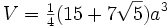

i am interested as to the background of the people who play n. i was browsing the forums when i came upon a thread that discussed the sexual orientation of one of my favorite authors: Sendy. Anyway, it turns out that Sendy is a transexual, which prompted a deluge of replies concerning the sexual orientation of certain authors, the politics of gay marriage, racial profiling, and prejudice. I was very interested by the thread and that prompted me to make one of my own to learn more about the people with whom i share the common trait of being obsessed with n. Don't feel pressured to say more than you are comfortable with, i ceratinly have a hope (hopefully not a misguided one) that this will be a discussion with a certain amount of civilness and thought provoking discussion.
I'm a German/Irish male, with very sensitive skin. I have a semi-permanent sunburnt look during the winter. I'm straight. I'm pro choice, pro gay marriage, and pro some other stuff too.
I'm very white too (I don't tan, I burn). I think I'm of Scottish descent, but I've never really verified this with my family members... Non-practicing Anglican, very liberal politically, and I'm gay.
If I had to guess, I would say that most people on these forums would have very similar backgrounds. I don't think I saw that thread on Sendy, so I don't really know.
If I had to guess, I would say that most people on these forums would have very similar backgrounds. I don't think I saw that thread on Sendy, so I don't really know.
I'm of German and Italian descent. My last name is German but I'm almost half Italian, I'd say that I'm not very tan but in the summer I can get pretty brown. Straight. Quite liberal on issues, to this point. I'm also quite laid back, but can, if the circumstances are right, get pretty invovled in a debate. So, ya, thats me.
I'm white, middle-class. I'm liberal (left-wing), straight, atheist and as tolerant of everything as I feel I can sensibly be - normally quite a lot. I tend not to hold grudges, or to have grudges held against me.
I would guess that I am very similar to Sweep (but older), Atilla (but different country), Wedgie123 and Tsukatu (but older, different nationality and we stick different labels on our personal beliefs). I probably share a few similarities with 'Blizz and LV, aswell as most of everyone else.
I think that in general the forumers are a tolerant lot. Sure, some of us are opinionated and unafraid to show it, but we generally stop short of the absurd.
I would guess that I am very similar to Sweep (but older), Atilla (but different country), Wedgie123 and Tsukatu (but older, different nationality and we stick different labels on our personal beliefs). I probably share a few similarities with 'Blizz and LV, aswell as most of everyone else.
I think that in general the forumers are a tolerant lot. Sure, some of us are opinionated and unafraid to show it, but we generally stop short of the absurd.
I am Italian, Hungarian, French Canadian, Irish, with traces of Latin-American, American Indian, and African-American descent. My fiancee is Sri Lankan and Portugese. Ya'll can find a picture of me in the post a picture thread I started.
I'm a Moderate Liberal, I am Pro-Gay Marriage, against banning abortion, but also against legalizing it altogether, pro-legalization of marijuana, pro-prohibition, and anti-human in general. I hate people with a fiery passion. S'about it.
I'm a Moderate Liberal, I am Pro-Gay Marriage, against banning abortion, but also against legalizing it altogether, pro-legalization of marijuana, pro-prohibition, and anti-human in general. I hate people with a fiery passion. S'about it.
lol iangb while reading the first part of your post i was thinking 'wow im really similar to you,' then i see the next part lol. very true. i am all of what you said you are, same age too and i also live stupidly close to you lol. i pretty much go with the flow with most beliefs and disputes/arguements and am a pretty standard run of the mill, average joe. 
it's great the number or people who have posted here already. As for myself, i'm a pretty average guy, i'm dutch, protestant, i live in connecticut, i'm straight and a strict liberal (anything Gearoge Bush says must be wrong). I used to be a democrat, but i think that my history teacher is slowly making me into an anarchist. I think that gays should marry if they so choose, abortion is a woman's perogative, and that marajuana and prositition should be made legal. Marajuana because no one cares about the laws, and prostitution because it would make a practice that will always exist, safer and more standardized.
I'm mostly American, part German, part Irish, and that's all I know so far about that kind of stuff. My skin is rather white, as well. I am an atheist. I am straight. I am a nice guy everywhere; I don't start any fights or anything. I am fairly short for my grade (because I am one of the youngest eight graders out there...  ).
).
'Tis it, I believe.
). 'Tis it, I believe.
Oh, do we really need to bring height into this?
Well, my family used to believe we had some dutch in us, do to our size, but we don't.
Well, my family used to believe we had some dutch in us, do to our size, but we don't.
[offtopic]
about abortion: i'm pretty liberal with things like that, and used to be for it.
but since some time, i've got doubts: as every human is an individual product of genes from the moment of fertilisation, the question comes up if not every of these individual gene combinations should have the right to make their life. give feedback.
[/offtopic]
about abortion: i'm pretty liberal with things like that, and used to be for it.
but since some time, i've got doubts: as every human is an individual product of genes from the moment of fertilisation, the question comes up if not every of these individual gene combinations should have the right to make their life. give feedback.
[/offtopic]
I'm Italian-Canadian. I have a handful of other things in me, too. Just your general european array. I look generically "American", though, and none of my traits really have a nation assigned to them. Caramel-colored hair that fades to blonde in the summer and cerulean eyes. My fiancee is black, curvaceous, and beautiful and has funky hair. We have going to have cafe-au-lait kids some day and they will be super kawaii.
I am a liberal libertarian, emphasis on the liberal. I'm not particularly vehement about anything political, except for the legalization of marijuana. I'm only vehement about that because I don't think people understand the issues very well. I also despise any gender-related laws. I think that gender discrimination is still the largest form of discrimination in the world today. Most developed societies practice it. Until we can get rid of the unfair rulings on marriage laws and sexual behavior laws, we're going to be living in a society of inequality. Prostitution should be made legal. Despite what anyone says, it helps empower women if regulated appropriately. Japan has "prostititutes" who aren't unkempt in any way. They're beautiful and successful and they do what they do very well. Other nations need the same.
I'm a humanist. I'm a semi-agnostic douche bag who demands a special term for his beliefs and lack thereof. I'm pansexual in theory, but I've never found anyone aside from straight women that I've been attracted to. Despite all these libertarianisms, I am all in favor of taxation. The more the better. Especially for rich people. If it were possible to say I'm a libertarian socialist and still be able to argue my points, I'd likely be that instead. I always vote Democrat and I don't really think about why. I said "screw political decision-making" a long time ago. If the majority of Republicans are just marking a straight ticket, then I need to do so also to counteract them. It's either them or me, and it ain't going to be me, sons. Screw anyone who dislikes this ethic. Voting's for old people, anyway.
All-in-all, I'm not very diverse (and I've actually heard individual people refered to as "diverse" before, which is sad). I'm the white, glasses-bearing prep-nerd fallout from your standard American school system. I used to do a lot of drugs. I feel very knowledgable of cultures. I like to believe I'm very worldly. I like ethnic chicks.
(Also, I think we should avoid the abortion debate.)
I am a liberal libertarian, emphasis on the liberal. I'm not particularly vehement about anything political, except for the legalization of marijuana. I'm only vehement about that because I don't think people understand the issues very well. I also despise any gender-related laws. I think that gender discrimination is still the largest form of discrimination in the world today. Most developed societies practice it. Until we can get rid of the unfair rulings on marriage laws and sexual behavior laws, we're going to be living in a society of inequality. Prostitution should be made legal. Despite what anyone says, it helps empower women if regulated appropriately. Japan has "prostititutes" who aren't unkempt in any way. They're beautiful and successful and they do what they do very well. Other nations need the same.
I'm a humanist. I'm a semi-agnostic douche bag who demands a special term for his beliefs and lack thereof. I'm pansexual in theory, but I've never found anyone aside from straight women that I've been attracted to. Despite all these libertarianisms, I am all in favor of taxation. The more the better. Especially for rich people. If it were possible to say I'm a libertarian socialist and still be able to argue my points, I'd likely be that instead. I always vote Democrat and I don't really think about why. I said "screw political decision-making" a long time ago. If the majority of Republicans are just marking a straight ticket, then I need to do so also to counteract them. It's either them or me, and it ain't going to be me, sons. Screw anyone who dislikes this ethic. Voting's for old people, anyway.
All-in-all, I'm not very diverse (and I've actually heard individual people refered to as "diverse" before, which is sad). I'm the white, glasses-bearing prep-nerd fallout from your standard American school system. I used to do a lot of drugs. I feel very knowledgable of cultures. I like to believe I'm very worldly. I like ethnic chicks.
(Also, I think we should avoid the abortion debate.)
I'm Italian-Canadian. I have a handful of other things in me, too. Just your general european array... etc
Your political/moral/ethical/whatever leanings sound like those of a lot of people I met in university. And I completely agree with you on the prostitution/marijuana points. I'm curious though: Pansexual in theory, but never been attracted to anyone but straight females. How would you identify as anything but straight?
Also, agreed. The abortion debate probably wouldn't be too constructive in this environment.
I dunno. I just feel like my idealism doesn't match the cards I've been handed in life. Deep down, I have an Andy-Dickish sense of "do whatever you want with whomever you want". Mine has only been consummated with straight (and bi, actually) females. I just have this weird, otherworldly feeling that I was meant to be pansexual, though. Particularly because the word itself sounds so grandiloquent that I must have it apply to me in some way...
hmm... me=white republican guy, mostly german, live in middle of the usa, and im generally neutral in all political stuff, and even though i cant vote yet... the last election definitely would not have voted for kerry... o, and somewhat of a farmer, although i live in a city and dad owns electronic store, so im not a hick like several ppl in this area 
I'm also an American, and not stupendously proud of it. My heritage is German with a bit of Russian and Romanian in there too.
Woa props dude I'm Romanian too. Now I live in Dundas, Ontario, Canada.
I'm 99% Romanian and 1% Russian.
I'm 99% Romanian and 1% Russian.
I am Australian, although my great-great-grandparents where Anglo-Celtic (or possibly Nordic, though more likely a mixture of various north European lineages). I have extremely pale skin, light eyes and red hair, despite living in a hot country with a huge hole in the ozone layer right above it (TDL, if you move to Canada, could you take me with you?). I am male, middle class, well educated, hetrosexual, and agnostic. I am not strongly left or right wing, and will vote for whichever party (or independant) I agree with most/believe will do the least damage at the time.
Australian, with German ancestery and- inexplicably- something that I've been told is a Canadian accent?
Straight, with a sort of twisted sort of love story that's been refusing to, well, untwist for the past 4 years... The son of two parents who've both been married before meeting eachother, and who both will probably be divorcing from this relationship before their lives are out...
I'm... probably pro- choice, though I've recently started becoming unsure on the matter... But I think I'll stick on pro choice for now, even if I think the issue is missing a well developed gray area.
I'm a vegetarian... Finding myself becoming religous despite my better efforts not to- though, I don't think I'll ever stop thinking that religion is one of the greatest sources of evil in our world...
Oh. And I'm... not pro gay rights, per se. See, well, I am- but having 'gay rights' makes it sound, somehow, like a privilidge. I believe that it's absolute rubbish that our culture refuses to accept transgendered and gay people as, you know, the same of us- they need to be put into this little minority group, to be looked after by the Big Governments, who get to choose what's best for them...
So, basically, I am pro gay rights. So don't ask me why I wrote that first line.
I'm all for free speech, though I have an intense hatred of guru and pornography... The fact that stuff like that exists, is so easy to acess, and is considered almost 'normal' to view is horrendous... And, basically, forms the basis of the opposistions- in my opinion- greatest argument.
I'm probably slightly for the legalisation of Marijuana, but it's not much of an issue here in Australia. I'm definately very much against the death penalty or life imprisonment against drug dealers.
I hate the death penalty with a passion.
And-
I disagree entirely... How on earth can being payed for sex empower anybody? How can being somebody who can be bought or hired be empowered? At all?
It's like the new femensism- type movement sweeping Sydney at the moment- The whole lot of young, "empowered" females expressing their sexuality on whoever catches their eyes on the dancefloor... There were some interesting (and probably slightly innacurate) statistics about the whole thing, and I just don't get it. I don't get it, the way that these... women attempt to act out against sexism, by not letting themselves be treated as sex objects- rather, treating themselves as sex objects before anybody else gets a chance?
Anyway.
And I hate Bush and, to a slightly lesser extent, Howard.
Straight, with a sort of twisted sort of love story that's been refusing to, well, untwist for the past 4 years... The son of two parents who've both been married before meeting eachother, and who both will probably be divorcing from this relationship before their lives are out...
I'm... probably pro- choice, though I've recently started becoming unsure on the matter... But I think I'll stick on pro choice for now, even if I think the issue is missing a well developed gray area.
I'm a vegetarian... Finding myself becoming religous despite my better efforts not to- though, I don't think I'll ever stop thinking that religion is one of the greatest sources of evil in our world...
Oh. And I'm... not pro gay rights, per se. See, well, I am- but having 'gay rights' makes it sound, somehow, like a privilidge. I believe that it's absolute rubbish that our culture refuses to accept transgendered and gay people as, you know, the same of us- they need to be put into this little minority group, to be looked after by the Big Governments, who get to choose what's best for them...
So, basically, I am pro gay rights. So don't ask me why I wrote that first line.
I'm all for free speech, though I have an intense hatred of guru and pornography... The fact that stuff like that exists, is so easy to acess, and is considered almost 'normal' to view is horrendous... And, basically, forms the basis of the opposistions- in my opinion- greatest argument.
I'm probably slightly for the legalisation of Marijuana, but it's not much of an issue here in Australia. I'm definately very much against the death penalty or life imprisonment against drug dealers.
I hate the death penalty with a passion.
And-
Prostitution should be made legal. Despite what anyone says, it helps empower women if regulated appropriately. Japan has "prostititutes" who aren't unkempt in any way. They're beautiful and successful and they do what they do very well. Other nations need the same.That reminds me of Inara in Firefly... Anyway.
I disagree entirely... How on earth can being payed for sex empower anybody? How can being somebody who can be bought or hired be empowered? At all?
It's like the new femensism- type movement sweeping Sydney at the moment- The whole lot of young, "empowered" females expressing their sexuality on whoever catches their eyes on the dancefloor... There were some interesting (and probably slightly innacurate) statistics about the whole thing, and I just don't get it. I don't get it, the way that these... women attempt to act out against sexism, by not letting themselves be treated as sex objects- rather, treating themselves as sex objects before anybody else gets a chance?
Anyway.
And I hate Bush and, to a slightly lesser extent, Howard.
I disagree entirely... How on earth can being payed for sex empower anybody? How can being somebody who can be bought or hired be empowered? At all?
It's like the new femensism- type movement sweeping Sydney at the moment- The whole lot of young, "empowered" females expressing their sexuality on whoever catches their eyes on the dancefloor... There were some interesting (and probably slightly innacurate) statistics about the whole thing, and I just don't get it. I don't get it, the way that these... women attempt to act out against sexism, by not letting themselves be treated as sex objects- rather, treating themselves as sex objects before anybody else gets a chance?
I just think that prostitution should be destigmatized and depenalized. Women (and men) should be able to offer their sexuality to another person freely and as they so choose. If they want to, they should be able to do this for money. Ever heard of trophy wives? What makes them any different from prostitutes? Should people have to get married to exchange sex for money (without the liability of love)? Shouldn't sex be free to share as you please (and under any contracts that you desire)?
And I do think having sex with someone for money could be empowering to some. I can't claim to prove this to you, but I do know some folks (and have seen enough HBO specials) to know that some people like being able to share their sexuality with someone for a price. It's naive to think that no one could be empowered by the prospect of selling their sexuality. Even though you don't think that way, you should assume no one else does.
Now, I do disagree with prostitution that verges on sexual slavery. I also think decriminalizing prostitution will allow for women's rights groups and unions to help the industry avoid human rights violations. Currently, prostitutes can be the victims of many violent crimes and can be associated with other criminal situations, because they are considered to be among an "illegitimate" industry. Prostitutes could benefit by having their profession legitimized and removed from the "criminal industry". In essence, prostitution will still be around, legal or not, so we may as well help them out by making their profession acceptable and protected.
Secondly, I don't think women being free with their sexuality should be considered wrong. To be bold and take charge in sexual situations certainly doesn't make you into an object. Men do the same thing all the time. Men can be "easy" and have sex with the first chick they meet at a bar and they won't be considered to be objectifying themselves. Why is it that a woman who is easy is a slut and a man who is easy is a hardcore stud?
See, the reason a woman's sexual promiscuity could be seen as liberating is because it defies gender roles. Men can do the same thing and it is well within their modern gender role. The modern male is vindicated by the frequency with which he gets some action. A woman still bears some of the archaic sexual rules--a woman who makes herself available is a slut; a woman who seeks out a random man is a super-slut. They still operate under an opposite spectrum from men.
A man who pursues quick sex is studly; a man who is available is normal; a man who is unavailable is abnormal or celibate. A woman who pursues quick sex is very slutty; a woman who is available is a typical slut; a woman who is unavailable is normal.
Why is this the case? Because we think woman are objects and if we "use" them, their value depreciates. Why are women considered the "objects" during sex, while men are considered the "subjects"? That's primarily because of language and culture. The things that make us say "he bangs her" instead of the other way around; the mindset that makes men talk about women in the ways that they do--and we all know which way that is. It's the social norm. Men are the #1 gender and women are the things to be possessed, attained, and utilized. So, when women take charge in a situation, they are attempting to express themselves subjectively and break this stigma. They are taking a #1 place in society. This allows them overcome the opressive gender roles placed upon them.
So, while some feminists like to avoid sex altogether to resist being dominated by men, some feminists realize that they can experience sexuality as equals (even superiors) and attempt to do so. They attempt to redefine their gender role (or eliminate its influence altogether).
http://en.wikipedia.org/wiki/Pro-sex_feminism
I also think decriminalizing prostitution will allow for women's rights groups and unions to help the industry avoid human rights violations. Currently, prostitutes can be the victims of many violent crimes and can be associated with other criminal situations, because they are considered to be among an "illegitimate" industry. Prostitutes could benefit by having their profession legitimized and removed from the "criminal industry". In essence, prostitution will still be around, legal or not, so we may as well help them out by making their profession acceptable and protected.
Agreed.
However, under everything under the title of 'secondary'-
Once again, to a certain extent, I agree... but, still, it's an attitude that irks me...
The current accepted view of males when compared to females in sexual situations is, as you wrote... err, not good? But, replacing the current frame of mind in society to do with gender based sexual roles, to one in which women 'take charge' is, ummm... it's hard to describe.
It's like, the problem (in my opinion) is not to do with the treatment of females in these situations as the problem is to do with the treatment of the men. That it's not that Women aren't being free enough about expressing their sexuality as to do with the Men being too... free, about it.
Ummm.
Yeah, anyway.
I see what you both mean. If a prostitute is raped, what can she do about it? If she goes to the police stations, she'll be arrested in all likelyhood.
nice discussion going on up there....anyway i think im the only south east asian around....even asian....brown (naturally tanned  ), muslim, living in germany these days for my doctorate.....regarding moral/ethical values etc, im too liberal for a muslim.
), muslim, living in germany these days for my doctorate.....regarding moral/ethical values etc, im too liberal for a muslim.
), muslim, living in germany these days for my doctorate.....regarding moral/ethical values etc, im too liberal for a muslim.when did blue_tetris become a moderator?!?!?!? 

after an under the table deal 
lol. i remember he was the mod of the webcomics but ive only just noticed the moderator logo under his name.
after an under the table deal
*pops up from under the table*
*wipes his mouth*
Buh?!
Oh, you guys are so paranoid.
I'm white, and white, and whiter with a side of white. Canadian, American, and Finnish are my backgrounds, descending. I can't vote, but I consider myself a liberal. As long as what you're doing doesn't hurt anyone else, I'm probably for it- marijuana, or gay marriage. I'm not gay myself, but I've been asked if I was because I sarcastically hit on my classmates. I'm atheist, as well.
I'm swaying on abortion, though. I'm basically okay with it, but killing babies is just wrong. Why don't people just use condoms? If you can't afford one pack, you shouldn't be having a relationship with anybody.
I also have long, dirty blonde hair, which expresses my hippie-ness. Just a fun 'lil tidbit.
I'm swaying on abortion, though. I'm basically okay with it, but killing babies is just wrong. Why don't people just use condoms? If you can't afford one pack, you shouldn't be having a relationship with anybody.
I also have long, dirty blonde hair, which expresses my hippie-ness. Just a fun 'lil tidbit.
I'm pure-bred, 100% Slavic. There were rumors a few years back that I might be 1/256 Mongolian, but they were dismissed because they were extremely improbable.
I'm perfectly half-n-half Russian and Ukrainian. I grew up in Moscow and moved to America just after my 5th birthday. I still speak some Russian, but not fluently. I can understand far more than I can speak. In terms of economic standing, my family is low/middle class, pressing on middle class.
I'm a LaVey Satanist. Satanic philosophy is best described as antitheism + hate for Christianity + Humanism. Satanists do NOT worship the devil, but revere him nonetheless as an ideal even if they do acknowledge that he is fictional. In many ways, Satanism is similar in its nature (though certainly not in philosophy) to Buddhism. You can see my forum for more details about Satanism (http://relig.6.forumer.com/viewtopic.php?t=93).
I once described myself as a Democrat, but now I'm all over the board. I'm conservative when it comes to economics, liberal when it comes to social issues, libertarian when it comes to human rights, and ocassionally, though rarely, fascist when it comes to stupid things people do (such as drinking alcohol, smoking, and drug use).
On the issues that seem to be hot in this thread, I'm for the legalization of prostitution, and support a woman's right to choose to have an abortion.
I'm perfectly half-n-half Russian and Ukrainian. I grew up in Moscow and moved to America just after my 5th birthday. I still speak some Russian, but not fluently. I can understand far more than I can speak. In terms of economic standing, my family is low/middle class, pressing on middle class.
I'm a LaVey Satanist. Satanic philosophy is best described as antitheism + hate for Christianity + Humanism. Satanists do NOT worship the devil, but revere him nonetheless as an ideal even if they do acknowledge that he is fictional. In many ways, Satanism is similar in its nature (though certainly not in philosophy) to Buddhism. You can see my forum for more details about Satanism (http://relig.6.forumer.com/viewtopic.php?t=93).
I once described myself as a Democrat, but now I'm all over the board. I'm conservative when it comes to economics, liberal when it comes to social issues, libertarian when it comes to human rights, and ocassionally, though rarely, fascist when it comes to stupid things people do (such as drinking alcohol, smoking, and drug use).
On the issues that seem to be hot in this thread, I'm for the legalization of prostitution, and support a woman's right to choose to have an abortion.
I'm 16. My grandfather is 100% german and... long story short, im 40% German, 40% English, and the other 20% I dunno. I'm like 1,000 other races. I'm straight, but Drama can do things to ya. I don't mean to bring in religion, but as a Christian, I am a virgin. I only believe in abortion if it is absolutely necessary. I am against gay marrage, and I'm not prejudice, sort of.
That's me, take it or leave it.
I'm straight, but Drama can do things to ya. I don't mean to bring in religion, but as a Christian, I am a virgin. I only believe in abortion if it is absolutely necessary. I am against gay marrage, and I'm not prejudice, sort of.That's me, take it or leave it.
fascist when it comes to stupid things people do (such as drinking alcohol, smoking, and drug use)^agreed, which is half the reason im considered a loser by about 50% of everyone who knows my name, the other reason is that im about as in to computers as it gets for being 15 in the middle of the great plains (kansas)
political stuff: (*most of my political stuff only pertains to the USA*) i want to drill for oil in alaska, just in conjunction with environmentalists that can help reduce the side effects on the wild life, mostly against abortion, couldn't care less if 2 gay guys want to get married, why in the hell do you care if marijuana is legalized? half this country already smokes it (USA), i look on most issues with more of a scientific perspective then most (not very religious), i believe there hasn't been a truely smart and completely non-crooked president since lincoln or someone way back there, believe we need a scientist in office, then there would be more emphisis developing new energy solutions instead of buying more oil, (germany gets i believe half of its energy from wind energy, kansas is hellish windy so im sure it could at least supply itself with energy just from that), NASA would get more funding, and all these friggen oil company's that are jacking up pricesses would get squat... thats about it for now i think...
I'm 100% American, related to a president, pro-life, anti-gay marriage, pro-death penalty, conservative republican Christian. I'm about as far right-wing as you can get.
I'm against racism, the phrase "Happy Holidays", swearing in public, and Microsoft.
Thats me when it comes to the issues. You can probably easily predict where I stand on alot of issues. Except gun control. I don't know where I stand there.
I'm against racism, the phrase "Happy Holidays", swearing in public, and Microsoft.
Thats me when it comes to the issues. You can probably easily predict where I stand on alot of issues. Except gun control. I don't know where I stand there.
Why do you hate Microsoft? That's classic conservative campaigning at work. Bill Gate's money has been utilized in typical Republican fashion. He's not "thinking different" like those radical liberal douche bags at Apple. ^.^ He's employing fundamental right-wingy business strategies.
Also, how do you feel about interracial marriage? I've always wondered how anti-gay marriage people feel about it, but I never really get too much of a response.
Also, how do you feel about interracial marriage? I've always wondered how anti-gay marriage people feel about it, but I never really get too much of a response.
Why do you hate Microsoft? That's classic conservative campaigning at work. Bill Gate's money has been utilized in typical Republican fashion. He's not "thinking different" like those radical liberal douche bags at Apple. ^.^ He's employing fundamental right-wingy business strategies.
Also, how do you feel about interracial marriage? I've always wondered how anti-gay marriage people feel about it, but I never really get too much of a response.
Microsoft - Their products suck, but are more widely used than Apple's.
Interracial marriage? Fine. Whatever floats your boat.
lol after reading some of your guys stuff i realise just how pro everything i am lol. i really dont really have storong obligations against anything, just really easy going kinda yeaah whatever you wanna do thats cool type of guy. about me, im 19, white, 100% English, 5'00", muscular build . i drink, i dont smoke, i drive too. erm i have blonde hair, blue eyes that are now starting to turn green (probably not a good sign) and yeah that about covers my appearance, many women see me as being 'cute' lol, mainly because of my height. which isn't allways a bad thing if you know what i mean 
. i drink, i dont smoke, i drive too. erm i have blonde hair, blue eyes that are now starting to turn green (probably not a good sign) and yeah that about covers my appearance, many women see me as being 'cute' lol, mainly because of my height. which isn't allways a bad thing if you know what i mean Five feet even? Damn!
And I feel like a freak at over 6'8"!
And I feel like a freak at over 6'8"!
lol i feel for ya. but yeah 5 food dead. probably anyway lol, last time i checked i was 4'11" but im sure ive grown an inch since then.
Whatever floats your boat.
You can't really mean this and still call yourself a Republican. That violates... reality.
^haha^
I'm the same as wedgie (as previously stated). Heh, I'm taller though, and my eyes are green (turning blue) on the outside, turning to brown on the inside. Very odd.
Allthough I do have opinions of my own I tend not to show them, unless I get involved in an argument, in which case I'll either support my own opinion or (if I have no strong opinion) I'll support the minority. Generally, though, I'm very laid back.
I'm the same as wedgie (as previously stated). Heh, I'm taller though, and my eyes are green (turning blue) on the outside, turning to brown on the inside. Very odd.
Allthough I do have opinions of my own I tend not to show them, unless I get involved in an argument, in which case I'll either support my own opinion or (if I have no strong opinion) I'll support the minority. Generally, though, I'm very laid back.
I am 25% Mohawk Indian, 25% Oneida Indian, and the rest Canadian. Straight, and I don't get involved with politics. I always try to support my arguements but I can't seem to back them up/elaborate for more than a paragraph... which ends up in me losing the debate. I do what I can, though.
I do what I can, though. I'm white
my entire family is from britain, scotland or ireland
I am against interracial marraige
Gay marraige
And
I am extremly conservative, but am understanding
I think republicans and democrats are both guilty of being unable to listen.
Democrats think we're crazy and want an anarchist way of life
We, not me, think that democrats are communists.
The truth is that democrats are closer to creating a socialist society that is truthfully unable to work which has been proven throughout history. As for the republicans, seen from the great depression, this monopolization and pro-business ideal leads to an abrupt depression and insane manias in the economy.
The truth is that republicans want to make an economy where there is a strong seperation of classes with a very jagged flow from economic depressions and manias. They are good at times, but very hard on the people.
The democrats want to even out this jaggedness, but in doing so they are inhibiting the lower classes from rising. In fact, creating a large scale lower class.
This takes me to hating welfare. It does not help people, it gives them a crutch. Yes, social security for the elderly is fine, along with very selective welfare for the retarded (yes retarded, political correctness is a way of limiting free speech)
and bankrupt.
I seriously want to debate, but not with idiots who will say anything that is liberal or conservative. Straight ticket voting is a flawed system. In reality, both parties are mostly corrupt in office. They are both rich and want power in our government. They are truly the same trying to appeal to different audiences.
my entire family is from britain, scotland or ireland
I am against interracial marraige
Gay marraige
And
I am extremly conservative, but am understanding
I think republicans and democrats are both guilty of being unable to listen.
Democrats think we're crazy and want an anarchist way of life
We, not me, think that democrats are communists.
The truth is that democrats are closer to creating a socialist society that is truthfully unable to work which has been proven throughout history. As for the republicans, seen from the great depression, this monopolization and pro-business ideal leads to an abrupt depression and insane manias in the economy.
The truth is that republicans want to make an economy where there is a strong seperation of classes with a very jagged flow from economic depressions and manias. They are good at times, but very hard on the people.
The democrats want to even out this jaggedness, but in doing so they are inhibiting the lower classes from rising. In fact, creating a large scale lower class.
This takes me to hating welfare. It does not help people, it gives them a crutch. Yes, social security for the elderly is fine, along with very selective welfare for the retarded (yes retarded, political correctness is a way of limiting free speech)
and bankrupt.
I seriously want to debate, but not with idiots who will say anything that is liberal or conservative. Straight ticket voting is a flawed system. In reality, both parties are mostly corrupt in office. They are both rich and want power in our government. They are truly the same trying to appeal to different audiences.
Adding to my this
I am adding that this ideal is very flawed. The people that want everyone equality and no one extremely rich, are extremely rich. In order for a good capitalist society to operate, there must be the rich, poor, and middle classed people. The society is operates on this, and won't work without it.
The democrats want to even out this jaggedness, but in doing so they are inhibiting the lower classes from rising. In fact, creating a large scale lower class.
I am adding that this ideal is very flawed. The people that want everyone equality and no one extremely rich, are extremely rich. In order for a good capitalist society to operate, there must be the rich, poor, and middle classed people. The society is operates on this, and won't work without it.
Also I'm 6'3" and am good at basketball...
Being tall is fun!
Also, lets not have this discussion effect any of our other foruming and numa ratings.
Talking politics is fine, but lets not let it invade the rest of N.
Being tall is fun!
Also, lets not have this discussion effect any of our other foruming and numa ratings.
Talking politics is fine, but lets not let it invade the rest of N.
...and you clearly don't know how to use the  button.
button.
You're against interracial marriage? That's... interesting. Why?
EDIT: I clearly don't know how to use [img] tags.
button.You're against interracial marriage? That's... interesting. Why?
EDIT: I clearly don't know how to use [img] tags.
Gender: male
race: part english, part jamaican... oh and part canadian.
age: 14
height: 5'2
Gay marriage: against
Religion: christian (reason for the above).
I hate politics. I am relaxed and fun, I believe. I would not discriminate a gay person but if I found out my friend was gay I wouldnt hang out with him any more. I like some sport, not too physical I like stuff like badminton and table tennis and a bit of football (soccer). I hang out with friends alot and get on well with most people.
race: part english, part jamaican... oh and part canadian.
age: 14
height: 5'2
Gay marriage: against
Religion: christian (reason for the above).
I hate politics. I am relaxed and fun, I believe. I would not discriminate a gay person but if I found out my friend was gay I wouldnt hang out with him any more. I like some sport, not too physical I like stuff like badminton and table tennis and a bit of football (soccer). I hang out with friends alot and get on well with most people.
I would not discriminate a gay person but if I found out my friend was gay I wouldnt hang out with him any more.
Treating someone based on a category they fall under, and not on individual merit, is the dictionary definition of discrimination.
I would not discriminate a gay person but if I found out my friend was gay I wouldnt hang out with him any more.
Why wouldn't you hang out with him anymore? Social pressures? You must have a good reason.
yeah I mean would you not like the way he might be treated by other people. I mean surely if he was your mate then you should stand up for him. or would you be worried that because he likes men then he might start liking you lol? I mean gay men dont fancy all men you know.
I'm not trying to have a go at Gangsta-Skorp, I'm just trying to see if he has a good reason at all for why he would do that. I wouldn't be surprised if it's because of social pressure.
Why are people against gay marriage? I see absolutly no reason to segregate based on people's sexual preferences. And also, why be against interraccial marriage? I f someone could give me a good reason I would be grateful.
I'm 14, 5' 6", white, and I live in yarmouth, maine (USA)
to reply to 9400,
people are probably against gay marriage for one or both of these reasons:
1)It is against their religion
2)Social Security Issue- If gay spouses get benefits from social security, then there are more people getting retirement money from it but no more adding to it, so everyone gets less money to retire on
personally, I am undecided on this issue... there are probably more aspects to it that I don't know about
to reply to 9400,
people are probably against gay marriage for one or both of these reasons:
1)It is against their religion
2)Social Security Issue- If gay spouses get benefits from social security, then there are more people getting retirement money from it but no more adding to it, so everyone gets less money to retire on
personally, I am undecided on this issue... there are probably more aspects to it that I don't know about
My root reason for being against gay marriage is that it violates the sanctity of it. Its sin, not a perfect union created by God.
And being gay is against our genetic code and against human and biologic laws.
Reproduction would be impossible. I'm not looking at the gay thing from an entirly religious way. I mean, looking at it that way is fine, but we cant amend the constitution based on judaism and christianity not liking it.
Oh, as for the interracial thing, I find interracial marraige (in most cases not all) a sort of fetish like union. It seems to be very sex or socially related. Dating the black guy cuz his dick is bigger, dating the black girl, because her ass is bigger. Dating the white girl because she is prettier and just because she is white, means she is of greater value than the woman of my race. Naturally, people are more physically and socially attracted to other humans that are similar to them. I am naturally more attracted to white women. Its not my *choice* its the way I am. And when I mean attracted, I mean physically, mentally, and socially. Naturally we like to become attached with people similar to each other. If there was a room full of people, half-black, half-white, the humans would instinctivly segregate to form a predominately all-white or all black group. Same with genders, and later on they further segregate into beleives or mannerisms.
I am also proud of my white, caucasian, european decent. I might sound racist, but naturrally all people are prouder and slightly prejudice to people they share common attributes with. A black woman that is christian would lean towards the black's association because of her heritage and most likely not her mental reasoning and instinctive beleives. However, she would try and mold into here physically similar society to become more like the group's ideal whom which she feels closest too.
I'm not saying its right that people racially profile, are prejudice, or try to more strongly affiliate themselves with people that are physically similar to them. It is nature's way and it is instinctive for people to do this.
Reproduction would be impossible. I'm not looking at the gay thing from an entirly religious way. I mean, looking at it that way is fine, but we cant amend the constitution based on judaism and christianity not liking it.
Oh, as for the interracial thing, I find interracial marraige (in most cases not all) a sort of fetish like union. It seems to be very sex or socially related. Dating the black guy cuz his dick is bigger, dating the black girl, because her ass is bigger. Dating the white girl because she is prettier and just because she is white, means she is of greater value than the woman of my race. Naturally, people are more physically and socially attracted to other humans that are similar to them. I am naturally more attracted to white women. Its not my *choice* its the way I am. And when I mean attracted, I mean physically, mentally, and socially. Naturally we like to become attached with people similar to each other. If there was a room full of people, half-black, half-white, the humans would instinctivly segregate to form a predominately all-white or all black group. Same with genders, and later on they further segregate into beleives or mannerisms.
I am also proud of my white, caucasian, european decent. I might sound racist, but naturrally all people are prouder and slightly prejudice to people they share common attributes with. A black woman that is christian would lean towards the black's association because of her heritage and most likely not her mental reasoning and instinctive beleives. However, she would try and mold into here physically similar society to become more like the group's ideal whom which she feels closest too.
I'm not saying its right that people racially profile, are prejudice, or try to more strongly affiliate themselves with people that are physically similar to them. It is nature's way and it is instinctive for people to do this.
Reproduction would be impossible.
You say that like it's a bad thing.
being gay is against our genetic codeI've looked for a study to support that, and have failed, do you have a source for this info?
My root reason for being against gay marriage is that it violates the sanctity of it. Its sin, not a perfect union created by God.Eh...I just don't get it, ruin the sanctity, how?
And Mcp, after reading your entire post, I fail to see your reasoning against interracial marriage.
And lastly, Baraba, good point.
Eh...I just don't get it, ruin the sanctity, how?It's religion, man. Don't go there. Personally, I wouldn't waste my time arguing with a Bible.
Whatever, fuck it
none of us is going to change our views about the subject anyway.
none of us is going to change our views about the subject anyway.
Wahoo!
Ignorance rules!
Ignorance rules!
Whatever, fuck it
none of us is going to change our views about the subject anyway.
People who say this are usually the ones losing the argument
Whatever floats your boat.You can't really mean this and still call yourself a Republican. That violates... reality.
I'm sure he means it in relation to interracial marriage. Most republicans don't care at all about that anymore because "racism is wrong" has been pounded into our heads for decades now.
In the future, when "anti-gay discrimination is wrong" is pounded into all our heads during our elementary school years, the republicans will give up on this issue too.
Here is my two cents on everything:
I am against same-sex marriage, abortion, and the death penalty.
I am Christian, and everyone on my dad's side of the family is a pastor. One of my uncles is a well known preacher living in Portland, Oregon (I think). I don't know where I stand in the "Once saved, always saved" issue. I don't know a lot about these topics, but I stand firm in what I believe.
I am against same-sex marriage, abortion, and the death penalty.
I am Christian, and everyone on my dad's side of the family is a pastor. One of my uncles is a well known preacher living in Portland, Oregon (I think). I don't know where I stand in the "Once saved, always saved" issue. I don't know a lot about these topics, but I stand firm in what I believe.
... Daddaluma, have you ever thought about the idea that... oh god I don't want to go into this...
that when the white man first saw the black man, and vice versa, he was scared. Differences causes fear, aggression, and inevitably jealously. Imagine if you saw a green alien with two arms and two legs...Would you want to incorporate them into your lifestyle immediatly share cities, and become coexistent?
I personally would be scared shitless, and since when the white man found the black man, the black man was inferior in a social, mental, and technological sense. They channeld they ignorant fear into aggression. There was the idea that black people were inferior humans even though their societies hadn't yet evolved. This ignorant beleive was then taught to their descendants and used against these people in what is now called rascism. Back then rascism, bias, and ignorance wasn't found as cruel, evil or weak. It was simply there. Over time this taught ignorance was growing, feeding itself, and no one was there to stop it. People oftenly didn't question the way life was, and better yet, why do you associate this with republicans?
And to take this further, the democratic party back in these times and civil war owned the south. It was the republicans that fought for anti-slavery. It was the republicans that wanted to PUNISH the south for having slavery and being rascist. And to protect my beloved South, less than 10% of the population owned slaves. And even though they held the same views as the owners, so did the north! The north just gave them the jobs that were so low class, it was even harder to earn salary and feed, clothe, live, and own property with this money. The slaves techniquelly from a physical standpoint had it better off than the norther blacks. Its just that slavery is plain wrong that this isn't justifiable. And to take this further, if you are athiest, why do you have principles and follow the guidlines of good fellowship and have a set of principles. If their is no ultimate judgement and rascism and prejudice is under free speech, why do you defend these things. The fact is that science would never create feelings. It is actually hurtful to its growth. Self preservation and selfish leads to quicker evolution and more effiecient organisms. If you think about it, the chances of life, and life as complex as humanity's is so minisule, the fact that these chanced events weren't seen over is completely absurd
Obviously all you have done is listen to the news media and your parents and havent actually thought about history in depth. Democrats (im a republican so I dont know if we do this either) automatically group republicans with the rich racsist white boys. But indeed liberals are just as rich as republicans. This idea of the rich republicans is because we wish to cut taxes because we dont want the government to steal all our hard earned money. My grandfather's dad migrated here LEGALLY, from ireland, and he too was descriminated against. He was the white nigger. He had nothing, and went to work and never had a dollar fifty to his name. My grandfather and father worked in a fucking refinery...a fucking refinery. Minimum-fucking-wage. My other side had one more decendant and they owned a farm. My grandfather lived on a farm and milked cows since he was 5. Now he is extremely wealthy, and he wasn't given everything by some damn government official. But, my grandfather had worked two jobs and so did my grandmother to send my father to the family's first college. Now he works in real estate, is greatful for everything he has, and has lived almost the true american dream. And you say that everyone deserves a chance? the same chance my family had??? How about fucking that???? Your liberal countries give handouts to the beggers as real people actually have the will to live and better themselves with pride. We have something to look forward too, God. It may be false hope to you, but if it gives you the fuel you need to succeed, you should fucking respect that instead of trashing it like a primitive way. You people act like egomaniacal geniuses who want to propaganda the younger souls on these forums. I hope they dont read that garbage and fall for it. I hope they live and come to believe what they want and how they want to live their lives. Not what they are told by people who are as power hungry as they claim the republicans are.
I by no means am sticking up for every republican ever. Many of them are frauds, victims of what I say above except taught by the differently ignorant.
Read this...I dont care who responds, it gets off the topic, but it may of found the source...or this "discussion"
Respond, ill be here...
that when the white man first saw the black man, and vice versa, he was scared. Differences causes fear, aggression, and inevitably jealously. Imagine if you saw a green alien with two arms and two legs...Would you want to incorporate them into your lifestyle immediatly share cities, and become coexistent?
I personally would be scared shitless, and since when the white man found the black man, the black man was inferior in a social, mental, and technological sense. They channeld they ignorant fear into aggression. There was the idea that black people were inferior humans even though their societies hadn't yet evolved. This ignorant beleive was then taught to their descendants and used against these people in what is now called rascism. Back then rascism, bias, and ignorance wasn't found as cruel, evil or weak. It was simply there. Over time this taught ignorance was growing, feeding itself, and no one was there to stop it. People oftenly didn't question the way life was, and better yet, why do you associate this with republicans?
And to take this further, the democratic party back in these times and civil war owned the south. It was the republicans that fought for anti-slavery. It was the republicans that wanted to PUNISH the south for having slavery and being rascist. And to protect my beloved South, less than 10% of the population owned slaves. And even though they held the same views as the owners, so did the north! The north just gave them the jobs that were so low class, it was even harder to earn salary and feed, clothe, live, and own property with this money. The slaves techniquelly from a physical standpoint had it better off than the norther blacks. Its just that slavery is plain wrong that this isn't justifiable. And to take this further, if you are athiest, why do you have principles and follow the guidlines of good fellowship and have a set of principles. If their is no ultimate judgement and rascism and prejudice is under free speech, why do you defend these things. The fact is that science would never create feelings. It is actually hurtful to its growth. Self preservation and selfish leads to quicker evolution and more effiecient organisms. If you think about it, the chances of life, and life as complex as humanity's is so minisule, the fact that these chanced events weren't seen over is completely absurd
Obviously all you have done is listen to the news media and your parents and havent actually thought about history in depth. Democrats (im a republican so I dont know if we do this either) automatically group republicans with the rich racsist white boys. But indeed liberals are just as rich as republicans. This idea of the rich republicans is because we wish to cut taxes because we dont want the government to steal all our hard earned money. My grandfather's dad migrated here LEGALLY, from ireland, and he too was descriminated against. He was the white nigger. He had nothing, and went to work and never had a dollar fifty to his name. My grandfather and father worked in a fucking refinery...a fucking refinery. Minimum-fucking-wage. My other side had one more decendant and they owned a farm. My grandfather lived on a farm and milked cows since he was 5. Now he is extremely wealthy, and he wasn't given everything by some damn government official. But, my grandfather had worked two jobs and so did my grandmother to send my father to the family's first college. Now he works in real estate, is greatful for everything he has, and has lived almost the true american dream. And you say that everyone deserves a chance? the same chance my family had??? How about fucking that???? Your liberal countries give handouts to the beggers as real people actually have the will to live and better themselves with pride. We have something to look forward too, God. It may be false hope to you, but if it gives you the fuel you need to succeed, you should fucking respect that instead of trashing it like a primitive way. You people act like egomaniacal geniuses who want to propaganda the younger souls on these forums. I hope they dont read that garbage and fall for it. I hope they live and come to believe what they want and how they want to live their lives. Not what they are told by people who are as power hungry as they claim the republicans are.
I by no means am sticking up for every republican ever. Many of them are frauds, victims of what I say above except taught by the differently ignorant.
Read this...I dont care who responds, it gets off the topic, but it may of found the source...or this "discussion"
Respond, ill be here...
What the...
(After this point, I'm not too sure what you're trying to say. Probably my fault. I've poked holes in what I can understand.)
Its just that slavery is plain wrong that this isn't justifiable.So you're saying slavery is a good thing?
And to take this further, if you are athiest, why do you have principles and follow the guidlines of good fellowship and have a set of principles. If their is no ultimate judgement and rascism and prejudice is under free speech, why do you defend these things. The fact is that science would never create feelings. It is actually hurtful to its growth. Self preservation and selfish leads to quicker evolution and more effiecient organisms. If you think about it, the chances of life, and life as complex as humanity's is so minisule, the fact that these chanced events weren't seen over is completely absurdThat is utter, utter bollocks. Selfish leads to power for the individual, not the species. If everyone in a species lives selfishly, the species tends to self-annihalate. That's how society evolved - those that banded together overcame those who were selfish. If you look at examples in nature, many species of animal (who don't, as far as we know, worship God) work together to live more succesfully.
Obviously all you have done is listen to the news media and your parents and havent actually thought about history in depth. Democrats (im a republican so I dont know if we do this either) automatically group republicans with the rich racsist white boys. But indeed liberals are just as rich as republicans....so you're just racist white boys? Not too valid a point, I just couldn't help it.
And you say that everyone deserves a chance? the same chance my family had??Well, yes. If your familly hadn't had that chance then you wouldn't be here today arguing to keep down those less fortunate than yourself.
(After this point, I'm not too sure what you're trying to say. Probably my fault. I've poked holes in what I can understand.)
Totally divergent thought... I just don't get too many opinions on the issue that come from really down-to-earth sources.
If you're a Republican (conservative-type), answer this question: Why are you against interracial relationships? I'm not saying that being against them is wrong. I just want to know why. Do you just not want to marry someone outside of your race; or do you think it's bad that anyone marries outside their race?
(My ex's folks were very much against interracial relationships.)
If you're a Republican (conservative-type), answer this question: Why are you against interracial relationships? I'm not saying that being against them is wrong. I just want to know why. Do you just not want to marry someone outside of your race; or do you think it's bad that anyone marries outside their race?
(My ex's folks were very much against interracial relationships.)
I personally dont want to marry outside of my own race, I cant stop anyone else, but I find it personally as a way to perserve my own was and race.
I dont know, I might be extreme, but I dont care. Its what I think
oh iangb, my bad on the slavery thing, I meant to say I disagree with it. I didn't look over what I said, I just typed it so there might be a lot of errors.
I dont know, I might be extreme, but I dont care. Its what I think
oh iangb, my bad on the slavery thing, I meant to say I disagree with it. I didn't look over what I said, I just typed it so there might be a lot of errors.
What's the most desirable thing about perserving your own race? What might happen if your race becomes diluted? Are there undesirable things about the other races that you wouldn't want your family to have? What are those things?
(I'm just being Socratic. I'm not trying to start an argument.)
(I'm just being Socratic. I'm not trying to start an argument.)
I don't care if someone is black or white, as long as they're freindly. But I always make a point to myself everytime I see a black person, for some reason. Maybe it's just 200 years of genetics.
Why would anyone want or need to "perserve" their own race? The only reason I can think of is to make sure their children don't get discriminated.
Why would anyone want or need to "perserve" their own race? The only reason I can think of is to make sure their children don't get discriminated.
I'm one quarter Armenian. My ancestors on my mother's side were Scottish pig-stealers. Make of that what you will. Because my parents are journalists, I've lived in a number of places in my life. I was born in New York, and three weeks later I moved to Moscow, Russia. We resided there for three years, until we moved to Brussels, in Belgium. We stayed there for a year. We hated it. We up and left for Hong Kong, where we stayed for seven years. Now we're back in New York, Brooklyn, and this is our fourth year here. I have never spent more than four years at a school, and I never will, unless I become an undergraduate, or something like that. I don't expect to pursue a career that would require more than four years at college anyway, but you never know.
According to my friends, I oft get very sensitive, but when I'm not I become very "chill." Being chill is a good thing. I dislike being sensitive.
I'm a surrealist.
I'd like a lobster phone.
My greatest opposition is stupidity. I'm highly liberal, although I feel I can't genuinely say that, considering I don't have the right to vote yet. In any case, my parents are liberal. I'm a human rights advocate. Gay marriage, abortion, equal opportunities, these are all very important to me.
I wish human nature wasn't so destructive. If everyone believed in the well-being of others, we could easily prosper in an unregimented society. Every man for himself. It just so happens that humans are selfish, greedy bastards. Thus, we must be kept in line by police forces and governments which tend to be totally corrupt. Humans are idiots.
I used to toy with the fact that I might be gay. I think many people on these forums believe I'm gay. When it comes down to it, I would much rather be with a woman than any man. I feel many guys go through a stage like this in their lives. In other words, until further notice, I'm straight. I'm also agnostic to some extent. Leaning towards atheistic.
I entertain the possibility of the supernatural, but believe nothing without evidence.
I believe people should be allowed to choose what they want to do to their bodies. If they want to sell their sex, they should have the right. If they want to use mind-altering drugs, they should have the right. I believe anything should be legal, as long as it doesn't directly hurt economic or social health. Then again, I disagree with today's society, so economic and social health don't mean anything in my Utopia.
I think we'd all be happier if we walked around naked. Maybe some clothes if it were colder. On hot days, we should all strip. It would be so joyous.
I'm in the middle of a love dodecahedron. At each of the vertices is me.
Oh, did I mention, I hate people who are self-centered.
I hate racism more than most things. Racists should all be shot in the head twice. Stupid whiteys.
According to my friends, I oft get very sensitive, but when I'm not I become very "chill." Being chill is a good thing. I dislike being sensitive.
I'm a surrealist.
I'd like a lobster phone.
My greatest opposition is stupidity. I'm highly liberal, although I feel I can't genuinely say that, considering I don't have the right to vote yet. In any case, my parents are liberal. I'm a human rights advocate. Gay marriage, abortion, equal opportunities, these are all very important to me.
I wish human nature wasn't so destructive. If everyone believed in the well-being of others, we could easily prosper in an unregimented society. Every man for himself. It just so happens that humans are selfish, greedy bastards. Thus, we must be kept in line by police forces and governments which tend to be totally corrupt. Humans are idiots.
I used to toy with the fact that I might be gay. I think many people on these forums believe I'm gay. When it comes down to it, I would much rather be with a woman than any man. I feel many guys go through a stage like this in their lives. In other words, until further notice, I'm straight. I'm also agnostic to some extent. Leaning towards atheistic.
I entertain the possibility of the supernatural, but believe nothing without evidence.
I believe people should be allowed to choose what they want to do to their bodies. If they want to sell their sex, they should have the right. If they want to use mind-altering drugs, they should have the right. I believe anything should be legal, as long as it doesn't directly hurt economic or social health. Then again, I disagree with today's society, so economic and social health don't mean anything in my Utopia.
I think we'd all be happier if we walked around naked. Maybe some clothes if it were colder. On hot days, we should all strip. It would be so joyous.
I'm in the middle of a love dodecahedron. At each of the vertices is me.
Oh, did I mention, I hate people who are self-centered.
I hate racism more than most things. Racists should all be shot in the head twice. Stupid whiteys.
I believe people should be allowed to choose what they want to do to their bodies. If they want to sell their sex, they should have the right. If they want to use mind-altering drugs, they should have the right. I believe anything should be legal, as long as it doesn't directly hurt economic or social health. Then again, I disagree with today's society, so economic and social health don't mean anything in my Utopia.A-freaking-men, man.
I think we'd all be happier if we walked around naked. Maybe some clothes if it were colder. On hot days, we should all strip. It would be so joyous.
*hands Linus the pamphlet on Liberal Libertarianism*
You're invited my nephew's gay, black bar-mitzvah this Saturday.
I'm in the middle of a love dodecahedron. At each of the vertices is me.
Oh, did I mention, I hate people who are self-centered.
It's always about you, isn't it? I'm trying to envision the love dodecahedron. A dodecahedron has 20 vertices--each of which is you. It has twleve faces, which I assume are the twelve love interests of yours. It has 30 edges, which would have to represent some sort of relational boundaries between each of the 12 people in regards to yourself and each other. Its volume would have to equal the amount of stress that the love dodecahedron applies to you. The volume of course being:

...where a is the length of one relational border.
Ahem.
Consider yourself lucky, though. My love life is a rhombic enneacontahedron enclosed within an elongated square gyrobicupola, coated in a mild truncated icosahedron sauce and served with a glass of chilled rhombicosidodecahedron. Heh heh heh. Actually, right now my love life is more of a sphere, where I'm the... uh... surface.
I hate racism more than most things. Racists should all be shot in the head twice. Stupid whiteys.
But black racists are ok, right?
I hate racism more than most things. Racists should all be shot in the head twice. Stupid whiteys.Oh, a joke. Now I get it.
It seems blue_tetris is the only person around here with an ounce of a sense of humour within him.
Firstly, in my "love dodecahedron" point, I was joking around. I then proceeded to say I hated people who are self-centered, obviously contradicting what I had just said. It was a joke.
Secondly, I said I hated racists, then proceeded to call them "stupid whiteys." Another contradiction. Supposed to emit some sort of happy response from someone - a giggle? A chuckle? Come on. And no, I don't want to wish death upon anybody. I'm a pacifist, for the most part.
In any case, my two jokes have been utterly destroyed now. Thanks a lot, folks.
People take life too seriously sometimes. I don't.
Edit: I'm so there, Dave.
Firstly, in my "love dodecahedron" point, I was joking around. I then proceeded to say I hated people who are self-centered, obviously contradicting what I had just said. It was a joke.
Secondly, I said I hated racists, then proceeded to call them "stupid whiteys." Another contradiction. Supposed to emit some sort of happy response from someone - a giggle? A chuckle? Come on. And no, I don't want to wish death upon anybody. I'm a pacifist, for the most part.
In any case, my two jokes have been utterly destroyed now. Thanks a lot, folks.
People take life too seriously sometimes. I don't.
Edit: I'm so there, Dave.
I definitely got the dodecahedron joke. I actually laughed out loud. It was quite clever.
But I'm sorry to say that I somehow missed the fact that the racism bit was also a joke.
Anyway, the point is, only one of your jokes was ruined. You reckless exaggerator.
But I'm sorry to say that I somehow missed the fact that the racism bit was also a joke.
Anyway, the point is, only one of your jokes was ruined. You reckless exaggerator.
I think we'd all be happier if we walked around naked. Maybe some clothes if it were colder. On hot days, we should all strip. It would be so joyous.
Hah! Try having pale skin, red hair, and living in a country that has a huge hole in the ozone layer directly above it!
I hate racism more than most things. Racists should all be shot in the head twice. Stupid whiteys.
I hate this idea that white people are only racist. Im not saying that it wasn't a joke nevermore, but im using it as an example. It turns out that society is now bent on "equality" and "letting minorites rise to be as rich as white people". Also, a black man could say a white man couldn't jump even if he could jump higher than the black man, and every one would laugh. However, if the same white man said that the black man could do math, it would cause an uproar...
Going onto the equality thing. Isn't mandatory diversity disriminatory too???? The minority gets in just cause he is a minority, and even if he isn't as suitable for the school or job. Im am far from racist, but shouldn't the better suited man, or woman, get the job or in the college based on merit and ability? And if these institutions say that minorites need to be helped into these places for an equal chance, aren't they just saying passivly that white people are better at this, but we cant except you because we want to look caring...this is absurd. I really dont care about the persons gender or race. If someone applying for a job or school is smarter and better fitted, they should get the job. It is always fair. It might turn out that everyone is white, or everyone is black in the business or college, but in reality both sides had an equal opportunity and the loser just isn't as qualified....
my two cents.
nice discussion going on up there....anyway I think im the only south east asian around....even asian....brown (naturally tanned B)), muslim, living in germany these days for my doctorate.....regarding moral/ethical values etc, im too liberal for a muslim.
No. I'm Southeast Asian, too. (and so is pokemaniac1342). Anyway, I'm Singaporean Chinese, of (almost certainly) 100% Chinese descent. I'm a not-so-devout Roman Catholic, which is not very common here. And, I hate politicians.